| 日付 | 2012年3月25日（日） |
|---|---|
| 山域 | 奥武蔵 |
| メンバー | 家族（妻、長女・1歳） |
| 山行形態 | 子連れ日帰り |
| アクセス | 車、バス |
| ルート (Map) | 名郷→蕨山→藤棚山→さわらびの湯 |
本日の天気はそこそこの晴天。武甲山以来、久しぶりに埼玉の山に登ってみることにする。
蕨山の存在は前々から知っていて、ハイキングに最適な長さのコースがあるため
誰かを誘って登ってみようと思っていたのだが、
神奈川県に住んでいる友人が多く、埼玉の山に登る機会がなかなか無かった。
さりとて、単独行で登る気も起きず、放置された一山となっていた。
家族連れとなった今であれば、程よい長さの山行となりそうだ。
今回は登山口と下山口が離れているため、さわらびの湯に車を停めて、そこからバスで名郷に移動する。
8:28 名郷バス停到着。標高330m。
バスは席がほぼ埋まる程、登山者で賑わっていた。
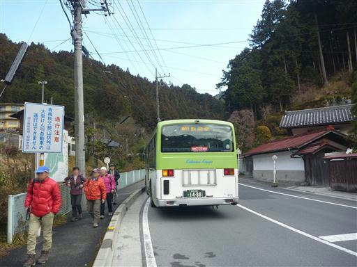
蕨山に向かって最初は林道を歩いていく。こちらに向かう登山者の姿は少ない。
名郷からは武川岳、有間山、大持山方面への登山道があるため、登山者はばらけてしまう。
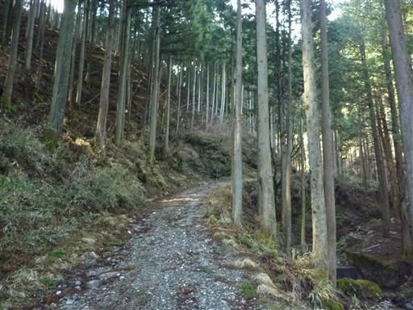
林道終点に到着。ここから沢を渡って登山道に入っていく。
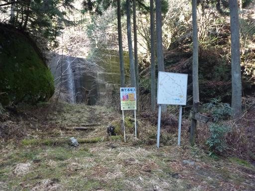
この辺りは見事な杉の植林地帯だ。今日は暖かいので花粉が飛んでいることだろう。

標高を上げると伊豆ヶ岳が見えてくる。
5年以上前に登った山で、久々に再訪するのも良いかもしれない。
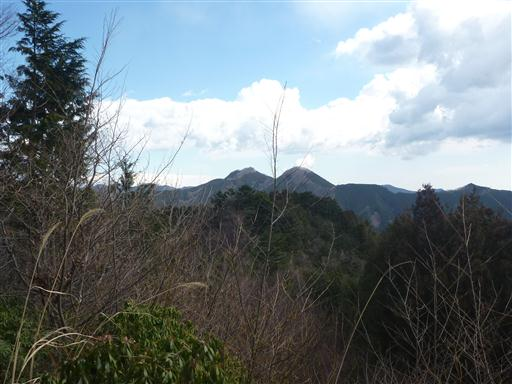
所々に岩がちな地形が現れる。道は整備されているため、特別難しいということはない。
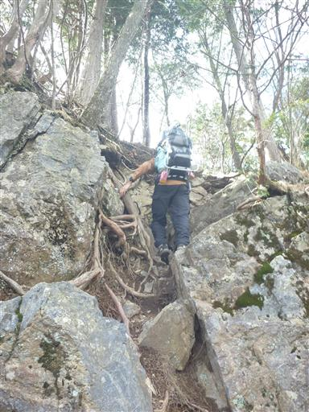
山頂に近づくと雑木林の中の尾根道になる。
年配の男女2人組と抜きつ抜かれつしながら登っていく。
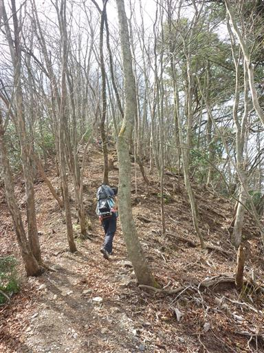
山頂直下は少し雪が出てくる。
大して積もってはいないのだが、傾斜があるため歩きにくい。

蕨山直下の肩に到着する。
ここから左折すると蕨山の山頂なのだが、まずは右折して蕨山の最高地点を踏んでくることにする。
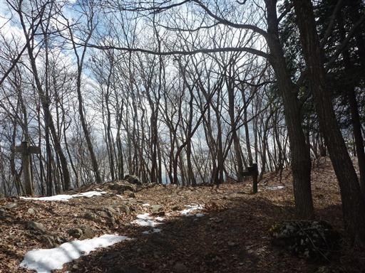
3分ほどで蕨山の最高地点に到着する。標高は1044mだ。
小さなケルンがあるだけの冴えない山頂だ。
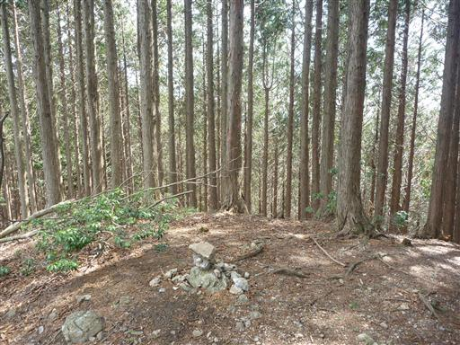
10:17 もと来た道を引き返して蕨山に到着する。標高1033m。
以前は標識に1044mと記載されていたらしいのだが、この場所が1044mではないため、
この地点の標高に修正されたようだ。
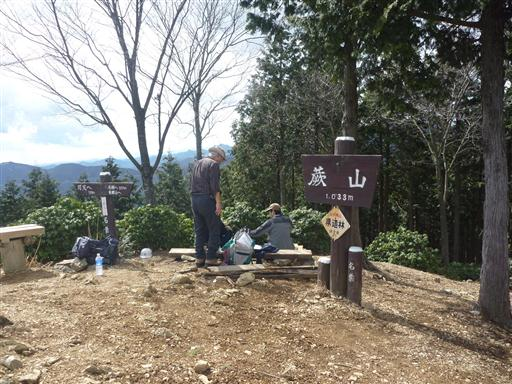
山頂からは北面の展望が広がる。
雲が出ていて遠くの山は見渡せないが、武甲山、武川岳、榛名山などが見渡せる。
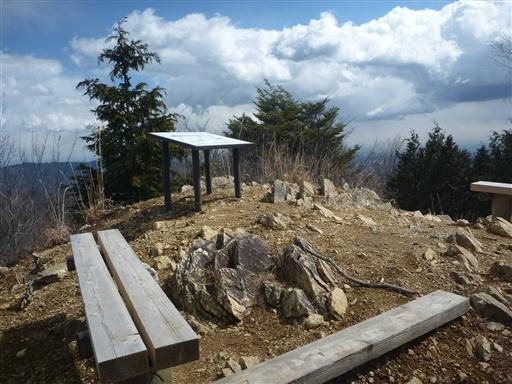
南方には大岳山、その奥には丹沢の山々が見えている。
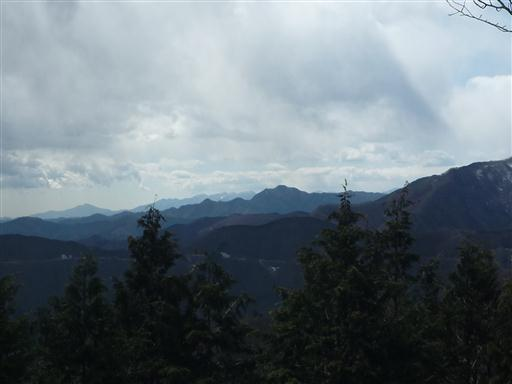
山頂にある山名表示はこの上なくいい加減だ。
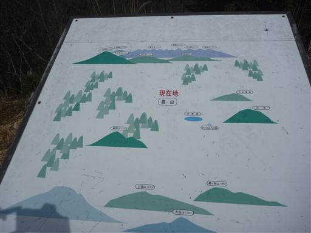
蕨山からは、さわらびの湯まで長い尾根道が続く。
最初に急な下り坂があるが、あとは緩いアップダウンが続く。
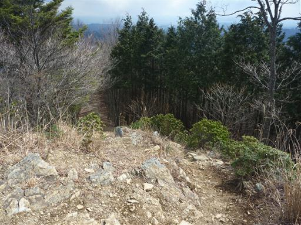
気持ちの良い尾根道が続く。こちらを登路にする人もいるようで、所々で登山者とすれ違う。
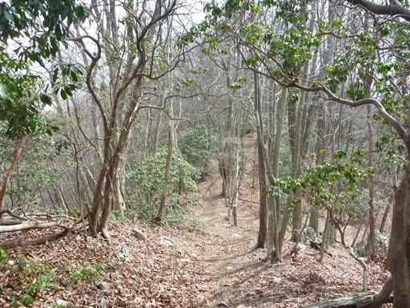
藤棚山に到着。山頂というより通過点という感じのピークだ。
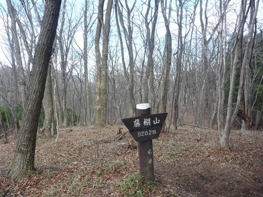
右手に林道が見えてきた。古いガイドブックには載っていないので比較的新しい林道なのだろう。
この辺りはあまり使われることのなさそうな林道があちらこちらにある。
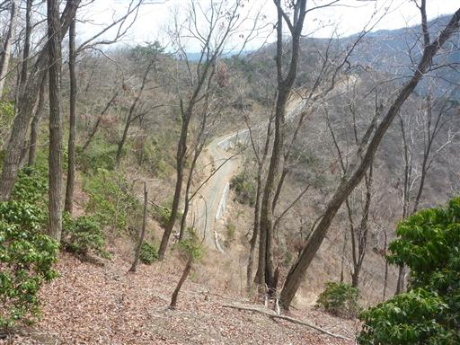
見えていた林道を横切る。舗装はされていないが割と整備されているようだ。

眼下に名栗湖が見えてきた。もうすぐ下山だ。
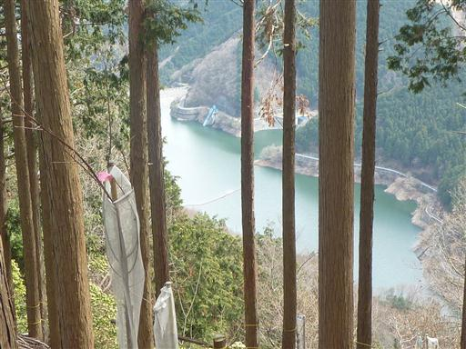
金比羅山に到着する。
登山道はこの山頂を巻いているため、気を付けていないと見逃してしまう。
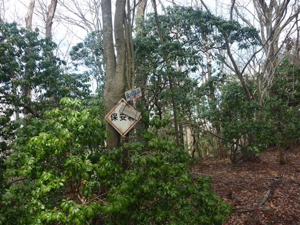
金比羅山を過ぎてしばらく歩くと金比羅神社跡に到着する。
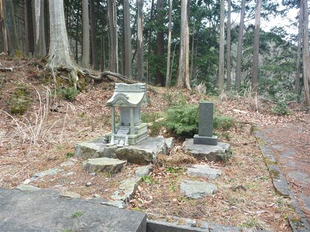
古くて壊れかけた鳥居が立っている。
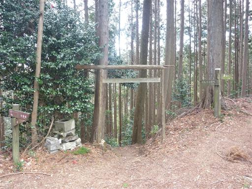
あとは淡々と下るのみ。途中「見晴らし」と書かれた標柱が出てくる。
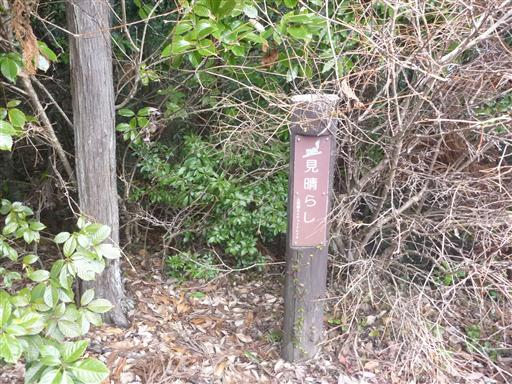
しかし樹木が生い茂って何も見えない。
側にはここから見える景色の解説板もあるのだが…

13:52 さわらびの湯駐車場到着。標高255m。
そこそこ展望があり、コースの長さもそこそこの、平凡ハイキングだった。
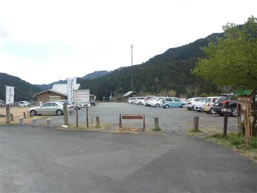